다섯 사람의 세 가지 표정
게임에서 실제로 불러오는 반신상 15개를 모은 제작 검수 화면입니다. 만족과 화남은 원본 시트의 표정을 사용하고, 아쉬움은 양쪽 눈썹과 입이 대칭인 부드러운 표정으로 새로 그렸습니다.
등장인물만족아쉬움화남
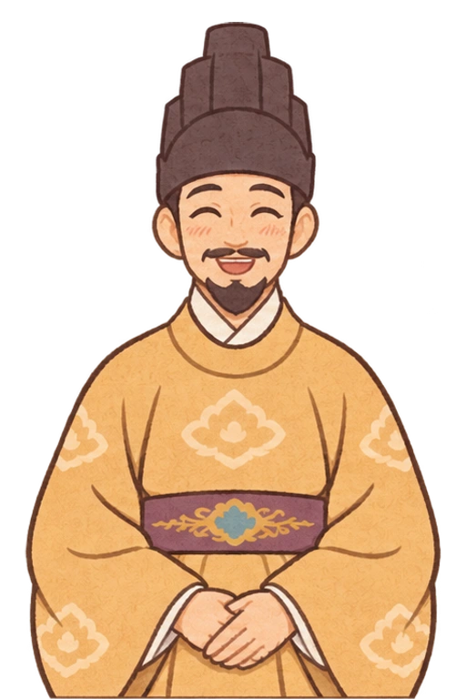
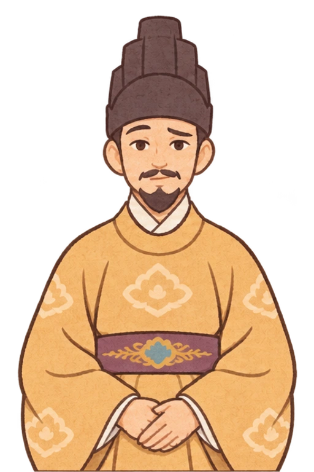
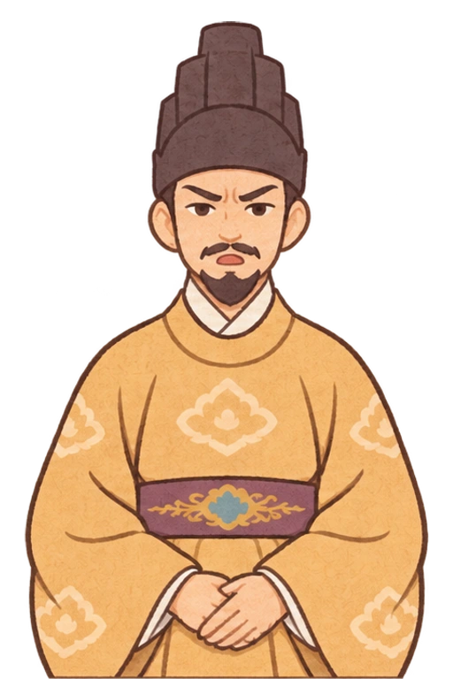
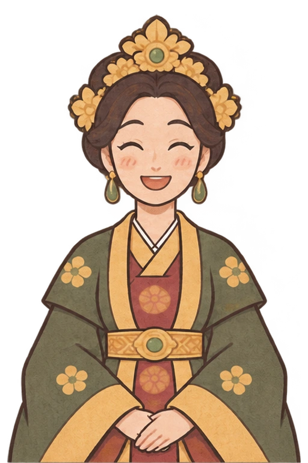
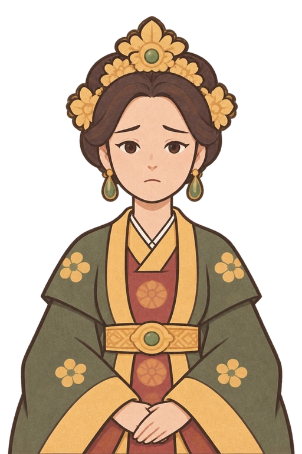
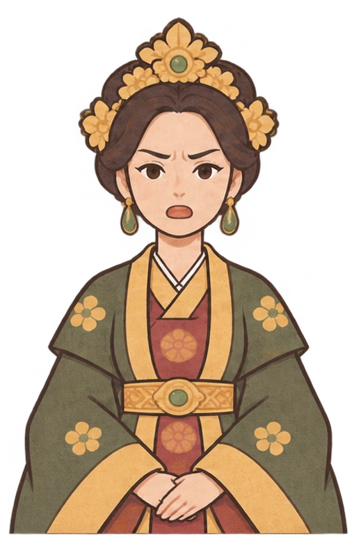
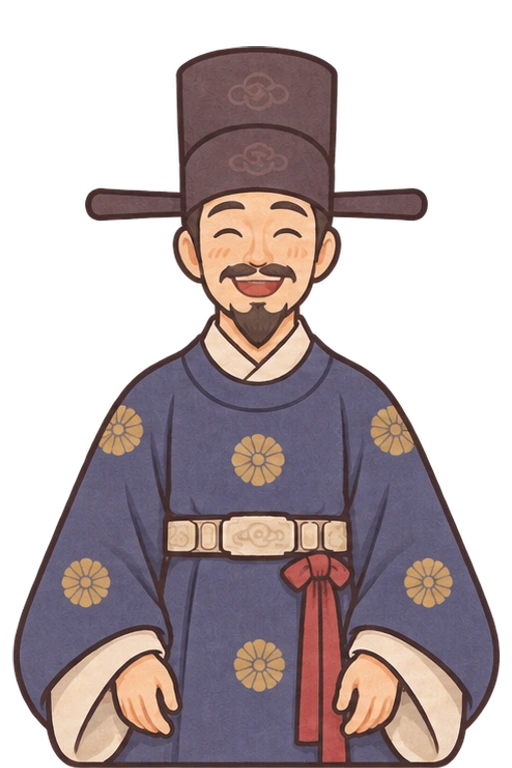
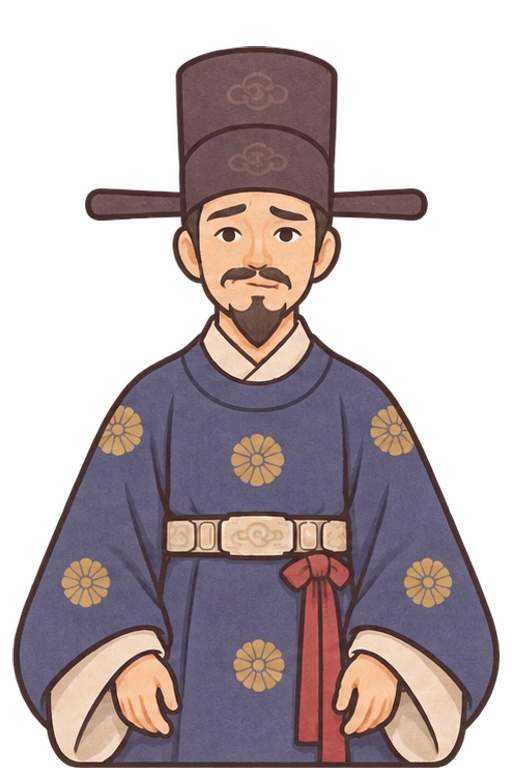
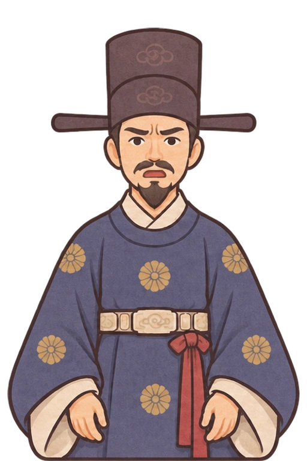
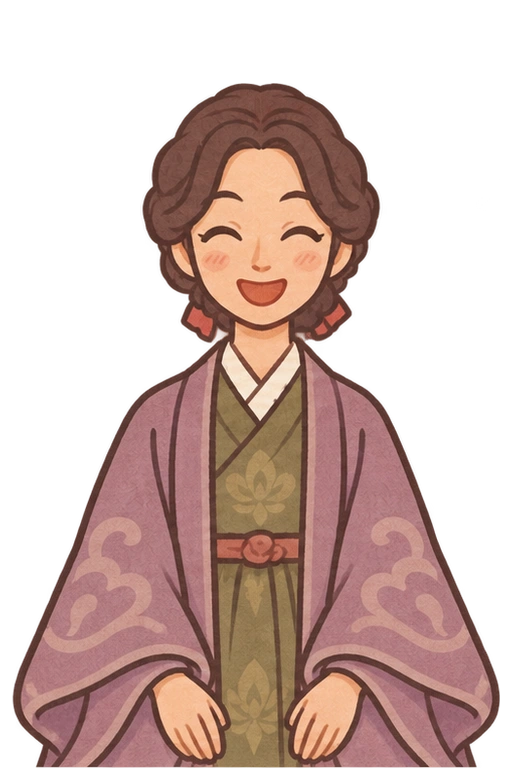
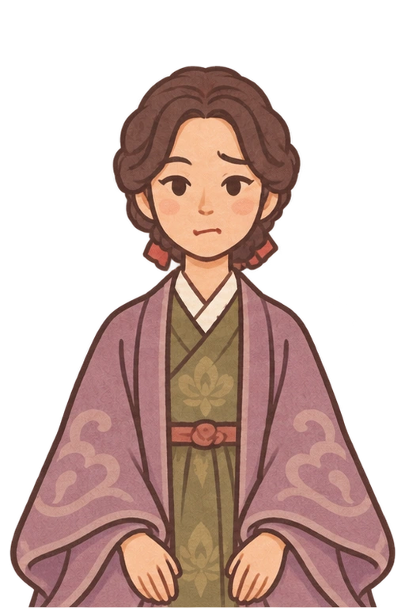
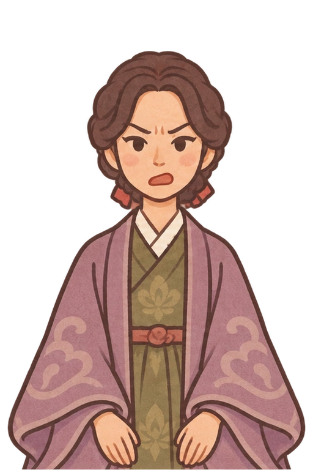
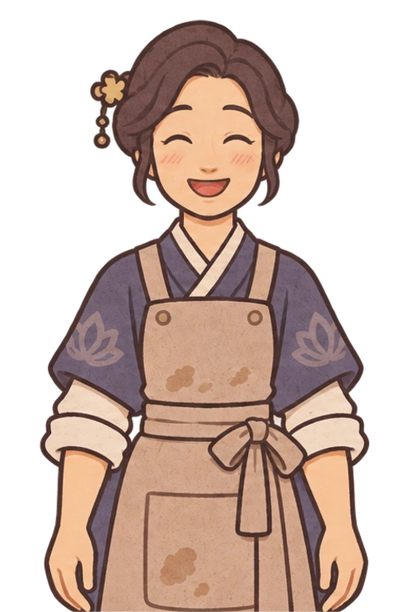
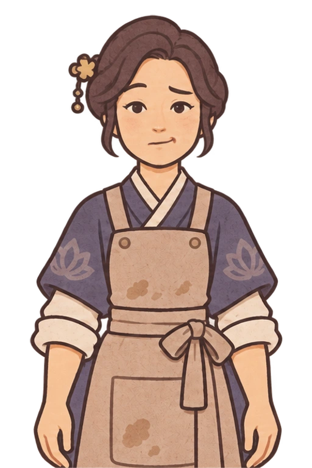
원본 이미지와 해시 기록은 manifest.json에 보존되어 있습니다. 게임의 점수 구간은 제작·주문 80점 및 총점 85점 이상이면 만족, 총점 60점 이상이면 아쉬움, 60점 미만이면 화남입니다. 이 검수 문서는 게임 메뉴에 노출되지 않습니다.